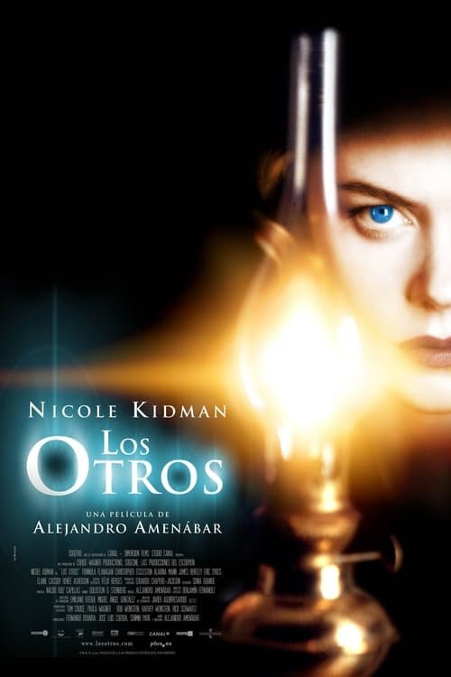

Los otros (2001)
Sinopsis Rápida
En una misteriosa mansión de la isla de Jersey, una madre criando a sus dos hijos hipersensibles a la luz se enfrenta a sucesos inexplicables que pondrán en jaque su cordura y la realidad misma.
Sinopsis Detallada
Grace Stewart, una devota madre, vive en una oscura mansión junto a sus dos hijos, que sufren una rara condición que les hace extremadamente sensibles a la luz. Mientras aguardan el regreso de su esposo, sucesos paranormales comienzan a perturbar su vida diaria. La atmósfera opresiva y los misteriosos fenómenos sobrenaturales plantean una creciente sensación de amenaza y terror psicológico. La película mantiene al espectador en vilo, cuestionando constantemente la naturaleza de la realidad y la fragilidad de la mente humana. Finalmente, el desgarrador desenlace revela una verdad impactante que recontextualiza todo lo visto.
¿Por qué tenés que verla?
- Una atmósfera inquietante y una tensión constante que te dejarán sin aliento.
- La magistral dirección de Alejandro Amenábar crea una experiencia cinematográfica inolvidable.
- Su impactante giro final la convirtió en una película de culto, discutida y analizada hasta el día de hoy.
- Excelente trabajo de fotografía y ambientación que potencia la narrativa.
Idea Extra
Análisis de los simbolismos religiosos y la representación de la culpa en 'Los Otros'.
{{CONTENIDO_RELACIONADO}}